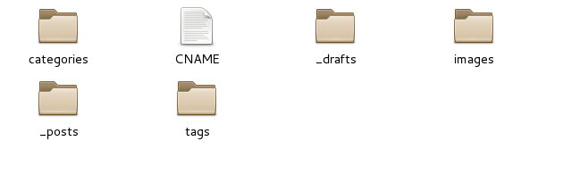
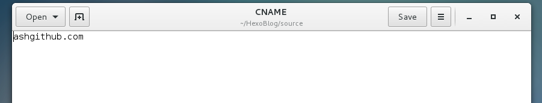
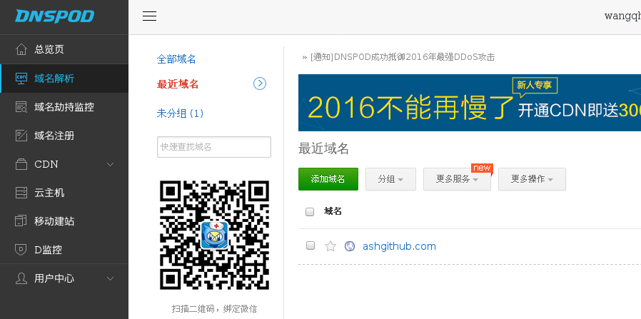
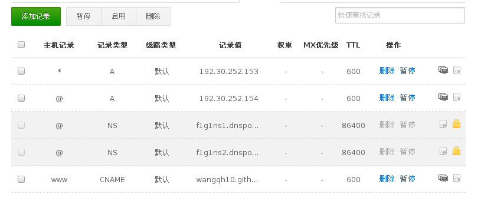
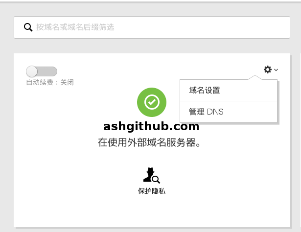
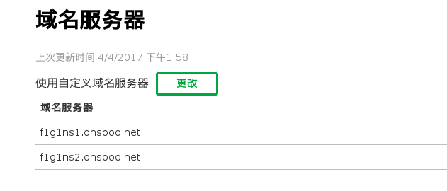

时间：2017-04-05 周三 16：48
说明： 最近想通过写博客来记录一些容易被遗忘的计算机或其他知识，在网上搜罗了许多大神写的教程，终于搭建出了自己的第一个博客——小智书屋。虽然现在博客还是很简陋，也不美观，但是我必须要踏出第一步，所以想把搭建博客的方法作为我的第一篇博文供大家和自己参考。这篇博客可能会用到HTML语言，Markdown语言以及Hexo官方文档和NexT 使用文档中介绍的方法。
选择构建博客的工具： 花了几天时间，网上找了很多方法，主要有Github Pages和WorldPress，最终选择了Github Pages——主要是由于我想开始学习Github相关知识，正好有此机会接触Github；同时在Hexo和Jekyll中选择了Hexo作为博客框架；最后选择了拓展性较好的NexT作为Hexo的主题。
本文介绍内容： 这篇博文将会详细介绍域名注册、DNS设置、github和Hexo设置等过程。至于NexT的教程，NexT 使用文档会有非常详细的说明，这里不再赘述。主要参考文章有《如何搭建一个独立博客——简明 Github Pages与 jekyll 教程》，《我的博客是如何搭建的（github pages + HEXO + 域名绑定）》和Hexo官方文档。本博文主要是把上述两篇博文以及Hexo官方文档进行整合，以便更好得理解，在此，特别感谢两位博主。
文章框架
Github Pages
GitHub Pages 本用于介绍托管在 GitHub 的项目，有300M免费空间，可以用来搭建一个博客。
关于Github Pages，会介绍以下几方面：
- 配置和使用Github
- 检查SSH keys的设置
- 生成新的SSH Key
- 添加 SSH Key 到 GitHub
- 测试
- 设置用户信息
- SSH Key 配置成功
- 创建Gihub仓库(Repository)
Hexo
Hexo 是高效的静态站点生成框架，她基于 Node.js。 通过 Hexo 你可以轻松地使用 Markdown 编写文章，除了 Markdown 本身的语法之外，还可以使用 Hexo 提供的 标签插件 来快速的插入特定形式的内容。
在 Hexo 中有两份主要的配置文件，其名称都是 _config.yml。 其中，一份位于站点根目录下，主要包含 Hexo 本身的配置；另一份位于主题目录下，这份配置由主题作者提供，主要用于配置主题相关的选项。
关于Hexo，会介绍以下几方面：
- 安装
- 建站
- 部署
- 购买域名
- 域名与Github Pages绑定
NexT
关于NexT，请参考NexT 使用文档，来安装和配置。
准备工作
在这篇教程之前，先依次安装：
Github Pages
注：
“配置和使用Github”转载自《如何搭建一个独立博客——简明 Github Pages与 jekyll 教程》
“创建Gihub仓库(Repository)”转载自《我的博客是如何搭建的（github pages + HEXO + 域名绑定）》
配置和使用Github
检查SSH keys的设置
我们如何让本地git项目与远程的github建立联系呢？用SSH keys。
首先我们需要检查你电脑上现有的ssh key:
|
|
如果提示：No such file or directory 说明你是第一次使用git。
生成新的SSH Key
|
|
会出现如下提示：
Generating public/private rsa key pair.
Enter file in which to save the key (/Users/your_user_directory/.ssh/id_rsa):<回车就好>
注意1: 此处的邮箱地址，你可以输入自己的邮箱地址；注意2: 此处的「-C」的是大写的「C」
然后系统会要你输入密码：
Enter passphrase (empty for no passphrase):<输入加密串>
Enter same passphrase again:<再次输入加密串>
在回车中会提示你输入一个密码，这个密码会在你提交项目时使用，如果为空的话提交项目时则不用输入。这个设置是防止别人往你的项目里提交内容。
注意：输入密码的时候没有*字样的，你直接输入就可以了。
添加 SSH Key 到 GitHub
在本机设置SSH Key之后，需要添加到GitHub上，以完成SSH链接的设置。
- 打开本地~.ssh\id_rsa.pub文件。此文件里面内容为刚才生成人密钥。如果看不到这个文件，你需要设置显示隐藏文件或者按Ctrl+h。准确的复制这个文件的内容，才能保证设置的成功
- 登陆github系统。点击右上角的 Settings—>SSH and GPG keys —> new ssh keys
- 把id_rsa.pub里的密钥复制到里面（key文本框中），点击 add key 就ok了
测试
可以输入下面的命令，看看设置是否成功，git@github.com的部分不要修改：
如果是下面的反馈：
The authenticity of host ‘github.com (207.97.227.239)’ can’t be established.
RSA key fingerprint is 16:27:ac:a5:76:28:2d:36:63:1b:56:4d:eb:df:a6:48.
Are you sure you want to continue connecting (yes/no)?
不要紧张，输入yes就好，然后会看到：
Hi xxx! You’ve successfully authenticated, but GitHub does not provide shell access.
设置用户信息
现在你已经可以通过 SSH 链接到 GitHub 了，还有一些个人信息需要完善的。
Git 会根据用户的名字和邮箱来记录提交。GitHub 也是用这些信息来做权限的处理，输入下面的代码进行个人信息的设置，把名称和邮箱替换成你自己的:
|
|
这是用户级别的配置，适用于当前登陆用户，可以在 ~/.gitconfig 中查看
另外还有系统级别的设置和仓库级别的配置，输入指令分别为:
|
|
一般，系统会优先考虑仓库级别的配置，然后是用户级别，最后才是系统级别
如果你想要更换用户名和邮箱，可以通过如下命令查看和更换用户名和邮箱地址:
|
|
也可以通过如下命令删除设置好的用户名和邮箱:
|
|
SSH Key 配置成功
本机已成功连接到 github。
若有问题，请重新设置。常见错误请参考：
GitHub Help - Generating SSH Keys
GitHub Help - Error Permission denied (publickey)
创建Gihub仓库(Repository)
创建 Github Repository 非常简单，如下图所示：

注意：仓库名最好是githubUserName.github.io，因为这样的话，你的Github Pages的地址就为githubUserName.github.io；否则若你的仓库名为其他的任意名字：randomName，那么你的Github Pages的地址就为githubUserName.github.io/randomName，那样就不方便了。
Hexo
注：
“安装、建站、部署”转载自《我的博客是如何搭建的（github pages + HEXO + 域名绑定）》和Hexo官方文档
“购买域名、域名与Github Pages绑定“转载自《如何搭建一个独立博客——简明 Github Pages与 jekyll 教程》，《我的博客是如何搭建的（github pages + HEXO + 域名绑定）》
Hexo 是一个快速、简洁且高效的博客框架。Hexo 使用 Markdown（或其他渲染引擎）解析文章，在几秒内，即可利用靓丽的主题生成静态网页。
安装
安装前提
安装 Hexo 相当简单。然而在安装前，您必须检查电脑中是否已安装下列应用程序：
如果您的电脑中已经安装上述必备程序，那么恭喜您！接下来只需要使用 npm 即可完成 Hexo 的安装。
|
|
注意，安装过程可能由于没有相关权限而出错，可以使用:
|
|
转化为root用户，然后执行。
当然，我本来想用sudo来执行npm命令的，但是出错了：
|
|
建站
安装 Hexo 完成后，请执行下列命令，Hexo 将会在指定文件夹中新建所需要的文件：
|
|
myBlogFloder是你的博客存储的目录名，可任意取。
新建完成后，指定文件夹(myBlogFloder)的目录如下：
.
├── _config.yml
├── package.json
├── scaffolds
├── source
| ├── _drafts
| └── _posts
└── themes
具体请看Hexo官方文档（建站） 信息，您可以在此配置大部分的参数。
这里需要特别提一下，官方的文档里并没讲解如何配置与Github pages进行关联，在此特意说一下配置信息。进入到你的站点（即myBlogFloder目录），然后以文本编辑器打开_config.yml文件，并滚动到最下面添加如下配置信息（注意最下边有deploy和type字段，覆盖这两个字段或者删除这两个字段然后复制下面的四个字段。）：
deploy:
type: git
repo: https://github.com/githubUserName/githubUserName.github.io.git
branch: master
好吧，到此你使用终端，然后进入到你的站点文件夹(myBlogFloder)使用hexo s命令，如果成功会打印类似Hexo is running at http://localhost:4000/. Press Ctrl+C to stop的一句话，再打开你的浏览器输入localhost:4000地址，可以看到你的初始博客。
部署
当然，这只是本地跑起来，而你的Github Pages服务器上并没有，所以你就需要在你的站点里使用终端命令进行发布：
|
|
到此为止，已经可以通过网址githubUserName.github.io访问你的博客了。如果你不想要自己的个性域名，完全可以不看下面的内容；如果想要自己的个性域名，可以接着往下看。
购买域名
推荐去GoDaddy购买，可以使用支付宝。
流程如下：
1、查你想要的域名；
2、查到适合的域名之后选择「continue to Cart」；
3、godaddy附加收费服务，不要管，继续「continue to Cart」；
4、确认购买；
5、结算；
6、检查；
具体请看《如何搭建一个独立博客——简明 Github Pages与 jekyll 教程》
域名与Github Pages绑定
在GoDaddy买好域名之后，需要与你的Githun Pages进行绑定。有两个部分需要设置：
- 部署到Github上的文件需要设置
- 在GoDaddy购买的域名的DNS需要设置
下面一步步介绍：
部署到Github上的文件设置
在你的～/myBlogFloder/source/目录中新建一个CNAME文件，不带后缀，效果如下：

以文本编辑器打开CNAME，里面添加你的域名信息（不加http://） 如下图：

填写完了之后再重新部署到github pages上（部署简写命令
hexo d -g)
如此，虽然Github Pages已经知道了你购买的域名，但你的域名并不知道你的Github Pages，所以需要对域名的DNS进行设置。
DNS设置
用腾讯DNSpod，主要是免费。
注册DNSpod,登陆之后，在“域名解析”中选择“添加域名”，如图所示：

然后输入你购买的域名，点击“确定”，DNSpod会自动分析你的域名，然后如下图设置：

主要将两个记录类型A的记录值分别设置为
- 192.30.252.153
- 192.30.252.154
将记录类型CNAME的主机记录修改为“www”，记录值修改为“githubUserName.github.io”
如果没有这几条记录，可以点击“添加记录”
如博客不能登录，有可能是 github 更改了空间服务的 ip 地址，记得及时到在GitHub Pages查看最新的ip即可。
如此设置还不够，还需要去GoDaddy修改DNS地址
去 GoDaddy 修改 DNS 地址
更改 GoDaddy 的 Nameservers 为 DNSpod 的 NameServers：
- 点击「My Account」，管理我的域名。
点击管理DNS，如下图所示：

将 GoDaddy 的 Nameservers 更改成 f1g1ns1.dnspod.net 和 f1g1ns2.dnspod.net，如下图所示：

如有不详看可以看DNSpod提供的官方帮助
等候一段时间，你就可以用个性域名访问你的博客啦！！！！